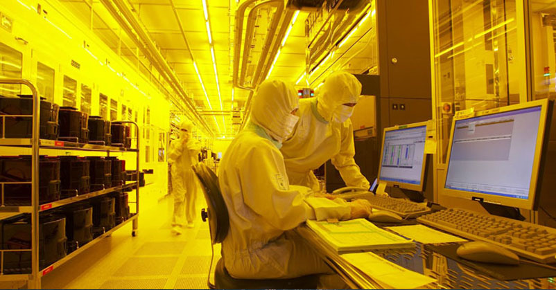
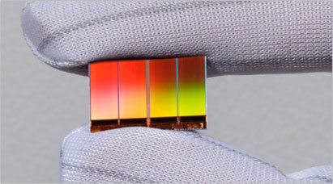

연구성과 10선
연구성과 10선
KAIST RESEARCH ACHIEVEMENTS
Smart Fab 생산 운영을 위한
시뮬레이션 기반 P&S 시스템 개발
산업공학과 최병규
요약
반도체 공장에는 교통관제센터가 있다? 매일 아침저녁으로 혼잡하게 얽히는 도심의 도로. 신호등처럼 통행을 관리하는 장치가 없다면 순식간에 차들이 얽혀 꼼짝도 못하게 되고 만다. 복잡한 공정을 거쳐 만들어지는 반도체를 생산하는 공장도 마찬가지다. 공장에도 교통관제센터가 필요한 것이다. KAIST에서 개발한 시뮬레이션 기반 P&S 시스템은 도시의 지능형 교통제어시스템과 같은 역할을 함으로써 생산라인이 얽히거나 정체가 일어나지 않게 도와준다.
연구내용
반도체는 크기는 작지만 온갖 첨단 기술의 집약체다. 당연히 고도의 기술과 복잡한 공정이 필요하기 때문에 반도체 생산 공장의 구조도 매우 복잡하다. 공장의 생산라인은 한 방향의 ‘흐름’이 있고 이들이 복잡하게 교차된다는 점에서 대도시의 혼잡한 도로와 유사하다. 차량의 통행량이 많아지면 도로가 복잡해지고 병목현상이 일어나며 교차로 관리가 어려워지는 것과 마찬가지로 공장에서는 제품 생산량이 늘어날수록 전체 공정을 관리하기가 어려워진다. 공장을 효율적으로 가동하려면 단위 시간에 최대한 많은 제품을 생산해야하므로 공장 설계와 관리에서는 이처럼 혼잡해진 생산라인을 어떻게 정리하는지가 중요한 고려사항이다.공장의 생산라인이 도로와 유사하다면 도로교통의 관리체계를 그대로 도입해서 활용할 수도 있을 것이다. 서울이나 대전과 같은 대도시에서는 지능형 교통제어시스템을 사용하여 도심 교통량을 조절한다. 대표적인 사례가 신호등 제어. 복잡한 도심에서는 출퇴근 시간에 차량 통행량이 많은 방향의 신호등의 파란불 점등시간을 늘려주고 상대적으로 교통량이 적은 방향은 줄여줘서 교통량에 관계없이 일정한 흐름이 최대한 유지될 수 있게 한다.

그림 1. 한국 IT 산업을 이끌어온 반도체 공장.
최병규교수 연구팀은 공장을 효율적으로 가동하는 데 필요한
'교통관제센터', P&S시스템을 개발했다.
복잡한 생산라인의 교통경찰,
P&S 시스템
마찬가지로 반도체 공장에서도 제품의 생산량을 관리해줄 수 있는 시스템의 구축이 필요하다. KAIST 산업공학과의 최병규 교수 연구실에서는 시뮬레이션에 기반한 P&S (Planning & Scheduling) 시스템을 연구하고 있다. P&S 시스템은 공장의 생산과정을 컴퓨터 모델로 표현하고 이를 시뮬레이션하여 짧은 시간 내에 많은 제품을 생산할 수 있는 공장 운영 계획을 만들어준다. 즉, 제품이 몰려들어서 체증이 발생할 위험이 있는 설비들을 미리 파악하고 생산 흐름을 골고루 분배함으로써 병목현상 없이 생산 흐름을 원활하도록 해주는 것이다. 국가지정연구실에 선정된 최 교수는 위의 기술을 발전시켜 벤처기업인 ㈜브이엠에스 솔루션스에 제공하고 삼성전자와 함께 보다 진보된 시스템을 개발하고 있다. 최 교수 연구팀이 개발하여 ㈜브이엠에스 솔루션스에 기술이전된 시뮬레이션 기반 P&S 시스템은 이후 지속적인 협력연구를 통하여 SeePlanAPS(R)라는 소프트웨어로 제품화됐다. 삼성전자는 SeePlanAPS(R)를 모든 반도체 및 LCD 공장의 생산 운영에 적용하고 있으며, 2011년 말에는 삼성전자의 표준 솔루션으로 도입하여 공장계획(factory plan)영역까지 확대한 시스템을 구축하고 있다. SeePlanAPS(R)의 성공에 힘입어 4~5명으로 시작한 ㈜브이엠에스 솔루션스는 현재 직원이 30명으로 크게 늘었으며 고부가가치 기술벤처회사로 인정받고 있다. 하이테크 부품산업의 경쟁력은 누가 빨리 신제품을 개발하여 안정적으로 대량생산을 할 수 있는가에 따라 좌우되는데 본 연구 개발로 국내 기업들이 이 분야에서 선진국 업체들을 앞서 갈 수 있으리라 기대된다.

그림 2. 반도체를 만들기 위해서는
복잡하면서도 정교하고 치밀한 공정을 거쳐야 한다.
그림 3. 반도체의 단가는 산업 전반에 큰 영향을 준다.
의미와 전망
시뮬레이션 기반 P&S 기술의 성공은 두 가지 측면에서 의미가 있다. 첫째, 국내 제조 산업의 중추적인 역할을 담당하고 있는 하이테크 부품 산업의 생산 공장을 효율적으로 운영할 수 있도록 솔루션을 제공했다는 것과 둘째, 취약한 국내 소프트웨어 산업에서 순수 국내 기술로 만든 솔루션을 보급하는 고부가가치 기술벤처회사를 탄생시켰다는 점이다. 실제로 SeePlanAPS(R)는 종전에 유사한 역할을 해오던 외국계 고가 제품들과 당당히 경쟁하여 삼성전자는 물론, 최근 한국타이어 등 다른 국내기업에도 생산 운영 시스템을 구축함으로써 해당 산업의 경쟁력 향상에 이바지하고 있다. 나아가 본 기술을 이용한 다양한 응용 시스템을 폭넓게 개발하여 해외시장에 내놓을 수 있을 것으로 기대된다. 해외진출의 관점에서 보면 삼성전자의 미국 및 중국의 생산 공장에 적용되고 있으며 한국타이어 헝가리 공장에도 시스템을 구축하고 있다.
연구비 지원
ㆍ현대자동차, 삼성전기, 삼성전자, LG 디스플레이 등의 굴지의 국내 제조업체뿐 아니라 과학기술부와 중소기업청 등의 공공 기관들과 총 34회의 시뮬레이션 기반 P&S 관련 프로젝트를 실시
수상
ㆍ시뮬레이션 기반 P&S 기술을 개발한 공로를 인정받아 2009년도에 KAIST로부터 기술혁신상을 수여했으며 교육과학기술부로부터 한국 공학상을 수상